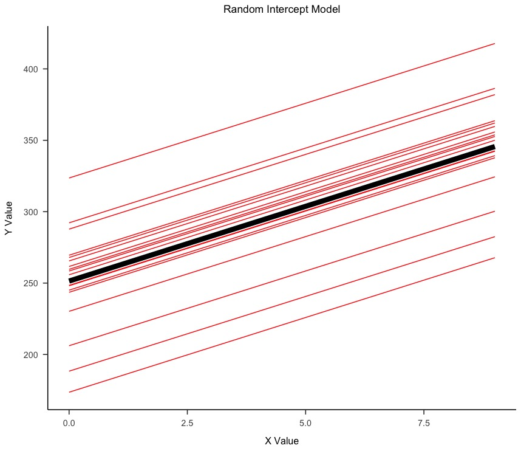

Linear regression is a fundamental statistical method used to model the relationship between a dependent variable and one or more independent variables. Linear regression assumes that there is a linear relationship between the outcome variable (often denoted as \(y\)) and the independent variables (denoted as \(x_{1}, x_{2}, x_{3},..., x_{n}\)). This means the change in outcome variable is expected to be directly proportional to the change in predictors.
In simple linear regression (one independent variable), the model is represented as -
\[y = \beta_{0} + \beta_{1}x + \epsilon\]
Here, \(\beta_{0}\) and \(\beta_{1}\) are the intercept and slope of the regression line, respectively. The intercept represents the expected mean value of the outcome variable when all predictors are equal to zero. The slope represents the expected change in the outcome variable for a one-unit change in the predictor variable. The term \(\epsilon\) represents the random error or noise in the model.
For every outcome value, the model has a predicted value and the difference between these values is knows as a residual.
\[e_{i} = y_{i} - \hat{y}_{i}\]
While there are multiple approaches that can help minimize these residuals, we typically rely on Least Squares.
The least squares approach chooses the coefficients \(\beta_{0}\) and \(\beta_{1}\) to minimize the sum of squared residuals.
Assessing the accuracy of Linear Regression Coefficients
The accuracy of the coefficient estimates depends on the amount of variability in the data. The variability of the coefficient estimates can be quantified using their standard errors. The standard error of the coefficient estimates is an estimate of the standard deviation of the coefficient estimates if we repeatedly estimated the coefficients using different datasets.
However, in most cases we do not have access to multiple samples. This is where we make certain assumptions regarding the model such as linearity, independence of errors, normality of errors, and homoscedasticity (constant variance of errors). In large samples, due to the central limit theorem, the distribution of the regression coefficients tends to be normal even if the errors are not perfectly normal. This makes the standard error estimates robust in large samples.
Here, \(sigma\) refers to the standard deviation of the error term.
n represents the number of observations
\(\sum{(x_i - \bar{x})^2}\) represents the sum of squared deviations of the predictor variable from its mean.
Hence, it is clear that the standard errors are a function of the sample size and the error variance.
The standard errors can be used to compute confidence intervals. A 95% confidence interval is defined as an interval that will contain the true population value 95% of the time if we were to repeatedly sample the population.
The 95% confidence interval for \(\beta_{1}\) is given by -
The standard errors can also be used to perform hypothesis tests on the coefficients. The most common hypothesis test involves testing the null hypothesis of no relationship between the predictor and the outcome variable against the alternative hypothesis of a non-zero relationship.
The test statistic for testing the null hypothesis that \(\beta_{1}\) is equal to zero is given by -
The p-value for the test is calculated as the probability of observing a value of the test statistic at least as extreme as the one observed, assuming the null hypothesis is true.
The p-value for the test of \(\beta_{1}\) is given by -
\[p-value = P(|t| > |t_{obs}|)\]
The p-value for the test of \(\beta_{0}\) is given by -
\[p-value = P(|t| > |t_{obs}|)\]
The p-value can be used to determine whether or not there is a relationship between the predictor and the outcome variable. If the p-value is less than the significance level (typically 0.05), we reject the null hypothesis and conclude that there is a relationship between the predictor and the outcome variable.
Assessing the overall accuracy of the linear model
The accuracy of the linear model can be assessed using the residual standard error (RSE) and the R-squared statistic.
The residual standard error (RSE) is an estimate of the standard deviation of the error term. speaking, it is the average amount that the response will deviate from the true regression line. Since RSE is a measure of lack of fit, it is rarely used despite it's usefulness. It is given by -
The R-squared statistic is a measure of the proportion of variability in the outcome variable that can be explained using the predictor variable. It is given by -
Here, TSS represents the total sum of squares, which is the sum of squared deviations of the outcome variable from its mean.
\[TSS = \sum_{i=1}^{n}(y_{i} - \bar{y})^{2}\]
Prediction Intervals
\[\text{SE of prediction} = \sqrt{\text{RSE}^2 + \text{SE}(\hat{y})^2}\]
Here, RSE (Residual Standard Error) represents the standard deviation of the residuals, which is an estimate of the standard deviation of the error term. \(SE(\hat{y})\) is the standard error of the mean prediction at x, calculated similarly to the standard error for the regression coefficients.
Prediction intervals in the context of linear regression are used to estimate the range within which we expect future observations to fall with a certain level of confidence, given the predictor values. These intervals are wider than confidence intervals for the regression line itself because they take into account not only the uncertainty of the regression estimate but also the variability (or "noise") in the data.
\[\hat{y} \pm t_{\frac{\alpha}{2}, \, n-2} \times \text{SE of prediction}\]
Here, \(\hat{y}\) represents the predicted value of the outcome variable, \(t_{\frac{\alpha}{2}, \, n-2}\) represents the critical value of the t-distribution with n-2 degrees of freedom and \(\text{SE of prediction}\) represents the standard error of the prediction.
Categorical Predictors
Categorical predictors can be incorporated into a linear model using dummy variables. A dummy variable is a numerical variable used to represent subgroups of the sample in your study. In research design, a dummy variable is often used to distinguish different treatment groups. In linear regression, the dummy variable serves as a placeholder for variables whose values are not numbers.
For example, if we have a categorical variable with three levels, we can create two dummy variables. The first dummy variable would take the value 1 if the observation belongs to the first level and 0 otherwise. The second dummy variable would take the value 1 if the observation belongs to the second level and 0 otherwise.
The model is given by -
\(x_i =
\begin{cases}
1 & \text{if $i^{th}$ person owns a house} \\
0 & \text{if $i^{th}$ person does not own a house}
\end{cases}
\)
\(y_i = \beta_0 + \beta_1 x_i + \epsilon_i = \begin{cases} \beta_0 + \beta_1 + \epsilon_i & \text{if $i^{th}$ person owns a house} \\ \beta_0 + \epsilon_i & \text{if $i^{th}$ person does not} \end{cases}\)
the predictor variable is binary, indicating whether or not an individual owns a house. This type of model is often used in situations where the variable of interest is categorical, typically with two categories represented as 0 and 1.
More than 2 levels
When the categorical variable has more than two levels, we can create additional dummy variables. For example, if we have a categorical variable with three levels, we can create two dummy variables. The first dummy variable would take the value 1 if the observation belongs to the first level and 0 otherwise. The second dummy variable would take the value 1 if the observation belongs to the second level and 0 otherwise.
\(x_{i1} =
\begin{cases}
1 & \text{if $i^{th}$ person is from the South} \\
0 & \text{if $i^{th}$ person is not from the South}
\end{cases}\)
\(x_{i2} =
\begin{cases}
1 & \text{if $i^{th}$ person is from the West} \\
0 & \text{if $i^{th}$ person is not from the West}
\end{cases}\)
For example, for the region variable we create two dummy variables. This model incorporates two dummy variables to represent three regions (South, West, and implicitly East):
\(y_i = \beta_0 + \beta_1 x_{i1} + \beta_2 x_{i2} + \epsilon_i =
\begin{cases}
\beta_0 + \beta_1 + \epsilon_i & \text{if $i^{th}$ person is from the South} \\
\beta_0 + \beta_2 + \epsilon_i & \text{if $i^{th}$ person is from the West} \\
\beta_0 + \epsilon_i & \text{if $i^{th}$ person is from the East}
\end{cases}\)
Removing the Additive Assumption
The linear regression model assumes that the relationship between the predictors and the outcome variable is additive. This means that the effect of changes in a predictor on the outcome variable is independent of the values of other predictors. However, this may not always be the case.
he inclusion of an interaction term in a linear regression model allows the effect of one predictor on the response variable to depend on the value of another predictor. This relaxes the additive assumption, which assumes that the effect of each predictor on the response variable is independent of the values of other predictors.
In this model, \(\tilde{\beta}_1\) becomes a function of \(X_2\), meaning the effect of \(X_1\) on Y changes depending on the value of \(X_2\). This interaction term thus allows for a more flexible model where the association between \(X_1\) and Y is not constant but varies with \(X_2\), effectively relaxing the additive assumption of the linear model.
Model Output
term
estimate
std.error
statistic
p.value
(Intercept)
1.04
0.10
10.32
0.00
x1
-0.12
0.11
-1.04
0.30
x2
-0.10
0.11
-0.88
0.38
x1:x2
2.11
0.12
17.72
0.00
Interaction between Categorical and Continous Predictor
The interaction between a categorical and continuous predictor can be incorporated into a linear model using dummy variables.
\[\text{balance}_i = \beta_0 + \beta_1 \times \text{income}_i +
\begin{cases}
\beta_2 & \text{if $i^{th}$ person is a student} \\
0 & \text{if $i^{th}$ person is not a student}
\end{cases}\]
\[= \beta_1 \times \text{income}_i +
\begin{cases}
\beta_0 + \beta_2 & \text{if $i^{th}$ person is a student} \\
\beta_0 & \text{if $i^{th}$ person is not a student}
\end{cases}
\]
Non-linearity of the response-predictor relationships.
Correlation of error terms.
Non-constant variance of error terms.
Outliers.
High-leverage points.
Collinearity.
Non-linearity of the response-predictor relationships: The linear regression model assumes that there is a straight-line relationship
between the predictors and the response. If the true relationship
is far from linear, then virtually all of the conclusions that we draw from
the fit are suspect.
Left: A linear regression of mpg on horsepower. A strong pattern in the residuals indicates non-linearity in the data. Right: A linear regression of mpg on horsepower and horsepower2. There is little pattern in the
residuals. We plot the residuals versus the predicted (or fitted) values. Ideally, the residual plot will show no fitted
discernible pattern. The presence of a pattern may indicate a problem with
some aspect of the linear model.
Correlation of Error Terms: An important assumption of the linear regression model is that the error
terms, \(e_{1},e_{2},e_{3},...,e_{n}\), are uncorrelated. The standard errors that
are computed for the estimated regression coefficients or the fittted values
are based on the assumption of uncorrelated error terms. If in fact there is
correlation among the error terms, then the estimated standard errors will
tend to underestimate the true standard errors. As a result, confidence and
prediction intervals will be narrower than they should be. Correlated error terms in a model can cause underestimation of standard errors, leading to overly narrow confidence intervals and misleadingly significant p-values. This creates a false sense of confidence in the model's accuracy.
Non Constance variance of error terms: In linear regression, it's crucial to assume that the error terms exhibit constant variance, symbolized as \(\text{Var}(\epsilon_i) = \sigma^2\). This assumption underpins the validity of standard errors, confidence intervals, and hypothesis testing in the linear model framework. However, it's common to encounter situations where the error term variances are not constant. For example, the error term variance might escalate as the response value increases.
Outliers and Leverage Points:
Feature
Outliers
Leverage Points
Definition
Data points where the observed value is far from the model's prediction.
Points that have an unusual predictor value, influencing the regression line significantly.
Cause
Often due to errors in data recording or unique cases not represented in the model.
Typically due to a unique combination of predictor values that are not common in the data set.
Impact on Model
May not significantly affect the model's slope but can impact error measures like RSE.
Can significantly change the slope and intercept of the regression line, altering the model's predictions.
Identification
Usually identified through residuals that are significantly larger or smaller than expected.
Identified through measures like leverage statistics, indicating an unusual influence on the model's fit.
Handling in Analysis
Often removed or adjusted to prevent skewing error metrics and model interpretation.
Might be kept in the analysis but requires careful interpretation of their impact on the model.
Collinearity: Collinearity refers to the situation in which two or more predictor variables are closely related to one another. In this situation, it can be difficult to separate out the individual effects of collinear variables on the response.
Aspect
Description
Definition
Collinearity occurs when two or more predictor variables in a regression model are highly correlated, making it difficult to isolate the individual effects of each predictor on the response variable.
Example
In a regression of balance on rating and limit, the high correlation between limit and rating represents collinearity.
Problems Caused
Collinearity can inflate the standard error of coefficients, leading to less reliable estimates, and can reduce the power of hypothesis tests.
Identification
Collinearity can be identified through a correlation matrix of predictors or more effectively through the Variance Inflation Factor (VIF).
Variance Inflation Factor (VIF)
VIF quantifies the extent of collinearity; a value exceeding 5 or 10 suggests problematic collinearity.
Solutions
One approach is to drop one of the collinear variables from the regression. Another is to combine collinear variables into a single predictor.
Example from Credit Data
Regression of balance on age, rating, and limit showed high VIF values for rating and limit, indicating significant collinearity.
Impact on Model Fit
Addressing collinearity often doesn't significantly compromise the model fit; for example, removing a predictor can reduce collinearity without affecting the \( R^2 \) substantially.
Steps to Fit a Regression Model using R
The following steps are used to fit a linear regression model using R:
Load the Data
# Load the Data csv
data <-- read.csv("data.csv")
# View the Data
head(data)
Data Exploration
# Data Descriptives - General
summary(data)
# Continous Variables
psych::describe(data)
misty::descript(data)
# Categorical Variables
library(tidyverse)
dat %>% select(!where(is.numeric)) %>% lapply(table)
# Grouped Descriptives
psych::describeBy(data, group = data$group)
# Correlation Matrix
cor(data %>% select(where(is.numeric)))
# Correlation Plot
library(ggcorrplot)
ggcorrplot(cor(data %>% select(where(is.numeric))))
Data Preprocessing
# Missing values
misty::descript(data)
# Handling Missing values
data <- data %>% drop_na()
data <- na.omit(data)
# Use Multiple Imputation
library(mice)
imp <- mice(data = dat_factored,m = 4,method='norm.nob')
# Input imputed values
imputed_ages <- 1:4 %>% map(~complete(imp,.x))
# Fit Linear Models for each imputed dataset
missing_mod <- imputed_ages %>% map(~lm(rwas ~ education + TIPI10 + gender + age, data = .x) %>% summary)
# Combine the results
pool(missing_mod)
# Extract estimates
coeffs<-summary(pool(missing_mod))$estimate
stderrs<-summary(pool(missing_mod))$std.error
pvals<-summary(pool(missing_mod))$p.value
# General Selection
model_data <- data[c("feature1", "feature2", "response_variable")]
# Stepwise Selection
step <- stepAIC(model, direction = "both")
# Backward Selection
step <- stepAIC(model, direction = "backward")
# Forward Selection
step <- stepAIC(model, direction = "forward")
# Lasso Regression
library(glmnet)
lasso <- glmnet(x, y, alpha = 1)
Data Visualization
# Scatterplot Matrix
library(GGally)
ggpairs(data)
# General Individual Plots
library(ggplot2)
ggplot(data, aes(x = x, y = y)) + geom_point()
ggplot(data, aes(x = x, y = y, color = group)) + geom_point()
ggplot(data, aes(x = x, y = y, color = group)) + geom_point() + geom_smooth(method = "lm")
ggplot(data, aes(x = x, y = y, color = group)) + geom_point() + geom_smooth(method = "lm", se = FALSE)
ggplot(data, aes(x = x, y = y, color = group)) + geom_point() + geom_smooth(method = "lm", se = FALSE) + geom_smooth(method = "lm", se = FALSE, formula = y ~ poly(x, 2))
Fit the Model
# Fit simple regression Model
model <- lm(y ~ x, data = data)
# View the Model
summary(model)
# Fit multiple regression Model
model <- lm(y ~ x1 + x2 + x3, data = data)
# View the Model
summary(model)
# Fit interaction Model
model <- lm(y ~ x1 * x2, data = data)
# View the Model
summary(model)
# Fit Model with Categorical Variables
model <- lm(y ~ x1 + x2 + x3, data = data)
# View the Model
summary(model)
Model Diagnostics
# Residuals vs Fitted
plot(model, which = 1)
# Normal Q-Q Plot
plot(model, which = 2)
# Scale-Location
plot(model, which = 3)
# Residuals vs Leverage
plot(model, which = 5)
# Cook's Distance
cooks.distance(model)
# Influence Plot
influencePlot(model)
# Variance Inflation Factor
library(car)
vif(model)
Fixed effects are the parameters that are constant for all the levels of the factor. For example, in the model \(y = \beta_0 + \beta_1 x_1 + \beta_2 x_2 + \epsilon\), \(\beta_0\) is the intercept and \(\beta_1\) and \(\beta_2\) are the slopes for the two predictors \(x_1\) and \(x_2\). These are fixed effects because they are constant for all the levels of the factor. The parameters associated with the levels of a categorical covariate are referred to as the "effects" of the levels. If the set of levels is fixed and reproducible, fixed-effects parameters are used to model the covariate. Fixed effects capture the average relationship between the response variable and the categorical covariate across all levels. They estimate how the response varies with each level of the categorical covariate.
Fixed Effects
Reaction
Days
Subject
199.05
0
310
194.33
1
310
234.32
2
310
232.84
3
310
229.31
4
310
220.46
5
310
235.42
6
310
255.75
7
310
261.01
8
310
247.52
9
310
Random Effects
Random effects are observed levels that represent a random sample from the set of all possible levels, random effects are incorporated into the model. Random effects account for the variability among the different levels of the categorical covariate. They capture the deviations from the fixed effects specific to each level and allow for individual differences among the units or groups.
Random Effects
Reaction
Days
Subject
249.56
0
308
258.70
1
308
250.80
2
308
321.44
3
308
356.85
4
308
414.69
5
308
382.20
6
308
290.15
7
308
430.59
8
308
466.35
9
308
222.73
0
309
205.27
1
309
202.98
2
309
204.71
3
309
207.72
4
309
215.96
5
309
213.63
6
309
217.73
7
309
224.30
8
309
237.31
9
309
Fixed vs Random Effects
Fixed-effects parameters are actual parameters in the statistical model, while random effects are unobserved random variables. To illustrate this distinction, let's consider an example where we want to model the annual reading test scores for students in a school district. We have two categorical covariates: student identifier and gender. The levels of the gender covariate, male and female, are fixed and do not change across different datasets or observations. They represent predetermined categories. On the other hand, the student identifier covariate represents individual students, and the observed students' scores can be seen as a sample from the larger population of all possible students. As we gather data from additional school districts or include results from previous or subsequent tests, the number of distinct levels of the student identifier increases. Each student in the sample represents a specific level of the covariate. Fixed-effects parameters in this scenario capture the average relationship between the response variable (test scores) and the covariates (gender) across all levels. They estimate how the test scores differ between male and female students on average. Random effects, in contrast, account for the variability among individual students within the larger population. They represent the unobserved individual characteristics or variations that contribute to the differences in test scores among students. Random effects are not directly estimated but are treated as random variables with their own distribution.
Mixed Effects Modelling
Mixed effects models are statistical models that incorporate both fixed effects and random effects. A model with random effects always includes at least one fixed-effects parameter, making it a mixed model. In mixed-effects models, we represent the statistical model using two random variables: Y for the response variable and B for the random effects.
Unconditional Distribution of B:
We describe the distribution of the random effects Β without considering any specific values of the response variable Υ. This distribution is denoted as P(Β) and is characterized by its functional form and parameters. For example, we might assume that Β follows a multivariate normal distribution with mean zero and a covariance matrix .
Conditional Distribution of Υ given Β:
Given a specific value of the random effects Β (denoted as b), we describe the distribution of the response variable given a specific value of the random effects Β (denoted as b), we describe the distribution of the response variable Υ as (Υ|Β = b). This conditional distribution takes into account the observed values of the response variable and the covariates. The functional form and parameters of this distribution depend on the specific modeling assumptions, such as whether we are using a linear regression, logistic regression, or other types of models. as (Y|B = b). This conditional distribution takes into account the observed values of the response variable and the covariates. The functional form and parameters of this distribution depend on the specific modeling assumptions, such as whether we are using a linear regression, logistic regression, or other types of models.
The Linear Mixed-effects Probability Model (Optional)
(Υ|Β = b) represents the conditional distribution of the response variable Υ given the random effects Β taking on the specific value b. It indicates that the distribution of Y depends on the value of B being equal to b.
N(X + Zb, σ²I) represents a multivariate normal distribution with mean X + Zb and covariance matrix σ²I. The mean is a linear combination of the fixed effects and the random effects, whereas, the covariance matrix is a diagonal matrix with Σθ as the variance component.
Β represents the vector of random effects, which follows a normal distribution with mean 0 and variance σ². The random effects capture the variability in the response variable that is not explained by the fixed effects.
The variance parameter for the Random Effect (optional)
Σθ represents the variance-covariance matrix of the random effects. The diagonal elements represent the variances of the individual random effects. The off-diagonal elements represent the covariances between pairs of random effects. These values indicate the extent to which the random effects are associated with each other.
θ represents the variance component parameter which determines the relative contribution of each random effect to the overall variability in the model.
Λθ represents the relative covariance factor. This is a q x q matrix that characterizes the relationship among the random effects. Each element represents the degree of association or correlation between pairs of random effects.
The equation describes how the variance-covariance matrix Σθ is derived from the squared variance component parameter σ2 and the outer product of Λθ and its transpose.
The goal is to scale the relative covariance factor Λθ by the variance component parameter θ, resulting in a matrix that captures the magnitudes of the random effects and their relationships
B represents the vector of random effects.
Λθ is the relative covariance factor, a q x q matrix.
U represents the spherical random effects, which are q-dimensional vectors drawn from a multivariate normal distribution with mean 0 and variance σ2Iq
Since the conditional mean X + Zb, is a linear function of both X
and U, minimization with respect to both parameters produces conditional modes of the spherical random effects and the conditional
estimate β for the fixed effects. Minimizing this further with respect to σ2 provides the profiled deviance which is a function of θ. Hence, the maximum likelhood is the value that minimizes the profiled deviance.
Random Intercept Model
When working with nested data, we often want to account for the variability among the different levels of the categorical covariate. If we fail to do so, we are in violation of the "no correlated residuals" assumption. Random Intercept model allows for each group to have its own baseline value (intercept) but assumes that the slope (the rate of change of the dependent variable with respect to the independent variable) is the same across all groups. This accounts for the fact that data within the same group may be more similar to each other than to data from different groups.
Feature
Linear Regression
Random Intercept Model
Intercepts
Same for all subjects/observations
Varies by group
Slopes
Same for all subjects/observations
Typically same for all groups (can vary in random slope models)
Data Structure
Independent observations
Clustered or grouped data
Assumption on Residuals
Independently and identically distributed
Correlated within groups
Use Case
When group clustering is not present or can be ignored
When data is grouped, and group-level variability is of interest
Random Effects
Reaction
Days
Subject
249.56
0
308
258.70
1
308
250.80
2
308
321.44
3
308
356.85
4
308
414.69
5
308
382.20
6
308
290.15
7
308
430.59
8
308
466.35
9
308
222.73
0
309
205.27
1
309
202.98
2
309
204.71
3
309
207.72
4
309
215.96
5
309
213.63
6
309
217.73
7
309
224.30
8
309
237.31
9
309
Random vs Fixed Estimates
Linear Model Output
Table 1 Linear Model
term
estimate
std.error
statistic
p.value
(Intercept)
224.62
33.23
6.76
0.00
Days
12.01
6.23
1.93
0.07
Random Intercept Model Output
Table 2 Random Effects Model (Fixed Effects)
Estimate
Std. Error
t value
(Intercept)
224.62
65.39
3.44
Days
12.01
3.51
3.42
Table 3 Random Effects Model (Random Effects)
grp
var1
vcov
sdcor
Subject
(Intercept)
7848.48
88.59
Residual
NA
2034.31
45.10
The lme4 Package
lme4 package in R is the gold standard for fitting linear mixed-effects models. You can install and load the package using the following code.
install.packages('lme4')
library(lme4)
Often finding practice datasets can be quite frustrating, however, several packages in R come with prebuilt datasets. An easy way to find all the datasets in a package is to use the following function -
data_set_names <- function(pack = ""){
require(dplyr)
require(purrr)
data_info <- data(package = pack)
# Extract the data set names as a vector
data_info$results %>% as.data.frame() %>% pull(Item)
}
Now you can utilize the function with package name to obtain all datasets in the packages. For example, if I want to find all the datasets in the lme4 package, I can use -
data_set_names('lme4')
Before fitting a model, it is important to understand the structure of the data. The following functions are useful for this purpose.
str() - This function provides a compact way to display the internal structure of an R object. It is a generic function, meaning that new data types can define their own specific methods of displaying the object structure.
head() - This function returns the first n rows for an object with a default value of 6.
summary() - This function returns a summary of the results of various model fitting functions.
View() - This function opens a spreadsheet-style data viewer for a data frame.
Let's use these functions to examine the structure of the sleepstudy dataset.
Visualizing data is an important step in the modeling process. It helps us understand the data and identify any patterns or outliers. In mixed effects models we're often working with categorical data, hence, it can be useful to produce visualizations. The following code generates a simple plot that examines how well different alpaca breeds vary in yield output over four time periods. Note: The code uses a custom theme function.
Descriptive statistics are used to describe the basic features of the data in a study. They provide simple summaries about the sample and the measures. Together with simple graphics analysis, they form the basis of virtually every quantitative analysis of data. There are several convenient functions that can be used to generate descriptive statistics in R.
Descriptive statistics by group
Variety: Cossack
Date: None
vars n mean sd median trimmed mad min max range skew kurtosis
Variety* 1 6 1.00 0.00 1.00 1.00 0.00 1.00 1.00 0.00 NaN NaN
Date* 2 6 1.00 0.00 1.00 1.00 0.00 1.00 1.00 0.00 NaN NaN
Block* 3 6 3.50 1.87 3.50 3.50 2.22 1.00 6.00 5.00 0.00 -1.80
Yield 4 6 1.76 0.37 1.74 1.76 0.44 1.35 2.33 0.98 0.28 -1.63
se
Variety* 0.00
Date* 0.00
Block* 0.76
Yield 0.15
-----------------------------------------------------------
Variety: Ladak
Date: None
vars n mean sd median trimmed mad min max range skew kurtosis
Variety* 1 6 1.00 0.00 1.00 1.00 0.00 1.00 1.00 0.00 NaN NaN
Date* 2 6 1.00 0.00 1.00 1.00 0.00 1.00 1.00 0.00 NaN NaN
Block* 3 6 3.50 1.87 3.50 3.50 2.22 1.00 6.00 5.00 0.00 -1.80
Yield 4 6 1.88 0.32 1.77 1.88 0.25 1.58 2.34 0.76 0.39 -1.87
se
Variety* 0.00
Date* 0.00
Block* 0.76
Yield 0.13
-----------------------------------------------------------
Variety: Ranger
Date: None
vars n mean sd median trimmed mad min max range skew kurtosis
Variety* 1 6 1.0 0.00 1.00 1.0 0.00 1.0 1.00 0.00 NaN NaN
Date* 2 6 1.0 0.00 1.00 1.0 0.00 1.0 1.00 0.00 NaN NaN
Block* 3 6 3.5 1.87 3.50 3.5 2.22 1.0 6.00 5.00 0.00 -1.80
Yield 4 6 1.7 0.34 1.77 1.7 0.41 1.3 2.13 0.83 -0.14 -1.87
se
Variety* 0.00
Date* 0.00
Block* 0.76
Yield 0.14
-----------------------------------------------------------
Variety: Cossack
Date: S1
vars n mean sd median trimmed mad min max range skew kurtosis
Variety* 1 6 1.0 0.00 1.00 1.0 0.00 1.00 1.00 0.00 NaN NaN
Date* 2 6 1.0 0.00 1.00 1.0 0.00 1.00 1.00 0.00 NaN NaN
Block* 3 6 3.5 1.87 3.50 3.5 2.22 1.00 6.00 5.00 0.00 -1.80
Yield 4 6 1.3 0.30 1.21 1.3 0.21 1.06 1.85 0.79 0.87 -0.91
se
Variety* 0.00
Date* 0.00
Block* 0.76
Yield 0.12
-----------------------------------------------------------
Variety: Ladak
Date: S1
vars n mean sd median trimmed mad min max range skew kurtosis
Variety* 1 6 1.00 0.00 1.00 1.00 0.00 1.00 1.00 0.00 NaN NaN
Date* 2 6 1.00 0.00 1.00 1.00 0.00 1.00 1.00 0.00 NaN NaN
Block* 3 6 3.50 1.87 3.50 3.50 2.22 1.00 6.00 5.00 0.00 -1.80
Yield 4 6 1.31 0.25 1.25 1.31 0.26 0.94 1.59 0.65 -0.08 -1.62
se
Variety* 0.00
Date* 0.00
Block* 0.76
Yield 0.10
-----------------------------------------------------------
Variety: Ranger
Date: S1
vars n mean sd median trimmed mad min max range skew kurtosis
Variety* 1 6 1.00 0.00 1.00 1.00 0.00 1.00 1.0 0.00 NaN NaN
Date* 2 6 1.00 0.00 1.00 1.00 0.00 1.00 1.0 0.00 NaN NaN
Block* 3 6 3.50 1.87 3.50 3.50 2.22 1.00 6.0 5.00 0.00 -1.80
Yield 4 6 1.41 0.26 1.42 1.41 0.16 1.01 1.8 0.79 -0.07 -1.22
se
Variety* 0.00
Date* 0.00
Block* 0.76
Yield 0.11
-----------------------------------------------------------
Variety: Cossack
Date: S20
vars n mean sd median trimmed mad min max range skew kurtosis
Variety* 1 6 1.00 0.00 1.00 1.00 0.00 1.00 1.00 0.00 NaN NaN
Date* 2 6 1.00 0.00 1.00 1.00 0.00 1.00 1.00 0.00 NaN NaN
Block* 3 6 3.50 1.87 3.50 3.50 2.22 1.00 6.00 5.00 0.00 -1.80
Yield 4 6 1.58 0.36 1.69 1.58 0.20 0.88 1.86 0.98 -1.08 -0.55
se
Variety* 0.00
Date* 0.00
Block* 0.76
Yield 0.15
-----------------------------------------------------------
Variety: Ladak
Date: S20
vars n mean sd median trimmed mad min max range skew kurtosis
Variety* 1 6 1.00 0.00 1.00 1.00 0.00 1.00 1.00 0.00 NaN NaN
Date* 2 6 1.00 0.00 1.00 1.00 0.00 1.00 1.00 0.00 NaN NaN
Block* 3 6 3.50 1.87 3.50 3.50 2.22 1.00 6.00 5.00 0.0 -1.80
Yield 4 6 1.66 0.41 1.64 1.66 0.39 1.12 2.29 1.17 0.2 -1.47
se
Variety* 0.00
Date* 0.00
Block* 0.76
Yield 0.17
-----------------------------------------------------------
Variety: Ranger
Date: S20
vars n mean sd median trimmed mad min max range skew kurtosis
Variety* 1 6 1.00 0.00 1.00 1.00 0.00 1.00 1.00 0.00 NaN NaN
Date* 2 6 1.00 0.00 1.00 1.00 0.00 1.00 1.00 0.00 NaN NaN
Block* 3 6 3.50 1.87 3.50 3.50 2.22 1.00 6.00 5.00 0.00 -1.80
Yield 4 6 1.48 0.26 1.56 1.48 0.24 1.13 1.82 0.69 -0.19 -1.73
se
Variety* 0.00
Date* 0.00
Block* 0.76
Yield 0.10
-----------------------------------------------------------
Variety: Cossack
Date: O7
vars n mean sd median trimmed mad min max range skew kurtosis
Variety* 1 6 1.00 0.00 1.0 1.00 0.00 1.00 1.00 0.00 NaN NaN
Date* 2 6 1.00 0.00 1.0 1.00 0.00 1.00 1.00 0.00 NaN NaN
Block* 3 6 3.50 1.87 3.5 3.50 2.22 1.00 6.00 5.00 0.00 -1.80
Yield 4 6 1.64 0.46 1.6 1.64 0.52 1.06 2.27 1.21 0.08 -1.88
se
Variety* 0.00
Date* 0.00
Block* 0.76
Yield 0.19
-----------------------------------------------------------
Variety: Ladak
Date: O7
vars n mean sd median trimmed mad min max range skew kurtosis
Variety* 1 6 1.00 0.00 1.00 1.00 0.00 1.0 1.00 0.00 NaN NaN
Date* 2 6 1.00 0.00 1.00 1.00 0.00 1.0 1.00 0.00 NaN NaN
Block* 3 6 3.50 1.87 3.50 3.50 2.22 1.0 6.00 5.00 0.00 -1.80
Yield 4 6 1.82 0.41 1.92 1.82 0.33 1.1 2.23 1.13 -0.69 -1.14
se
Variety* 0.00
Date* 0.00
Block* 0.76
Yield 0.17
-----------------------------------------------------------
Variety: Ranger
Date: O7
vars n mean sd median trimmed mad min max range skew kurtosis
Variety* 1 6 1.00 0.00 1.00 1.00 0.00 1.00 1.00 0.00 NaN NaN
Date* 2 6 1.00 0.00 1.00 1.00 0.00 1.00 1.00 0.00 NaN NaN
Block* 3 6 3.50 1.87 3.50 3.50 2.22 1.00 6.00 5.00 0.00 -1.8
Yield 4 6 1.61 0.22 1.56 1.61 0.16 1.33 1.99 0.66 0.49 -1.2
se
Variety* 0.00
Date* 0.00
Block* 0.76
Yield 0.09
descript() - This function provides descriptive statistics (misty package)
misty::descript(nlme::Alfalfa)
Fitting a Model in lme4
Fitting a model in lme4 follows the following base structure.
library(lme4)
mod = lmer(outcome ~ categorical_predictor + (1 | random_effect), data = dataset)
The output from the model has four major sections: a description of the
model that was fit, some statistics characterizing the model fit, a summary of properties of
the random effects and a summary of the mixed-effects parameter estimates.
For example, the following code displays sample output.
Linear mixed model fit by maximum likelihood ['lmerMod']
Formula: Yield ~ 1 + (1 | Batch)
Data: lme4::Dyestuff
br
AIC BIC logLik deviance df.resid
333.3 337.5 -163.7 327.3 27
br
Scaled residuals:
Min 1Q Median 3Q Max
-1.4315 -0.7972 0.1480 0.7721 1.8037
br
Random effects:
Groups Name Variance Std.Dev.
Batch (Intercept) 1388 37.26
Residual 2451 49.51
Number of obs: 30, groups: Batch, 6
br
Fixed effects:
Estimate Std. Error t value
(Intercept) 1527.50 17.69 86.33
In this case we have a single random effects term, (1|Batch), in the model formula and
the grouping factor for that term is Batch. There will be a total of six random effects, one
for each level of Batch.
At this point the an thing to note is that the default estimation criterion is the
REML (restricted maximum likelhood) criterion. Generally the REML estimates of variance components are preferred to
the ML (full-information maximum likelhood) estimates. When comparing models, however, we will use likelihood ratio tests, for
which the test statistic is the difference in the deviance of the fitted models (corresponds to the ratio of the likelhoods).
The following section is the table of estimates of parameters associated with the random
effects. In the above model we note that there are two main sources of variability -
Batch - batch to batch variability in the level of the outcome variable. For each level of the batch variable, random effects are estimated and added to the intercept with an unconditional variance of 1388.33.
Residual - the random effect associated with the residual or per-observation variability (also referred to as the within-batch variability). The line labeled Residual in this table gives the estimate of the variance of the residuals
and its corresponding standard deviation.
ranef(mod)
$Batch
(Intercept)
A -16.628222
B 0.369516
C 26.974671
D -21.801446
E 53.579825
F -42.494344
with conditional variances for Batch
Not all the variability in the model is associated with the random effects. Some of the variability in the response is associated with the fixed-effects terms.
This can be somewhat serve as a "significance test" for random effects. If the prediction intervals contain 0, one could claim that the variability in non-significant.
An alternative function more useful when dealing with a large number of random effects is -
This function focuses attention on the important effects and
de-emphasizes the trivial many that are close to zero. These can serve as effect plots for random effects.
To perform more formal significance tests, one can implement Likelhood Ratio Tests (LRT).
Assessing the output, we can state that model 2 (more complicated model) does not have a significantly lower deviance parameter. Hence, the addition of the additional parameter does not account for significant variance in the model.
Each group has its own intercept, reflecting its unique characteristics. These intercepts are random variables representing the deviation of each groups mean from the overall mean.
Common Slopes
While intercepts vary across groups, slopes are assumed to be consistent across all groups.
Intra-group Correlation
Observations within the same group are more likely to be similar, leading to intra-group correlation, which the model accounts for.
Flexibility and Generalization
The model is flexible and applicable to various scenarios with nested or grouped data, handling different levels of variability.
Improved Estimation and Inference
By accounting for group-level variability, the model provides more accurate estimates of the fixed effects and reliable statistical inferences.
The Random Intercept Model is used in statistics to analyze hierarchical or grouped data. Its general form can be represented as:
\( Y_{ij} \): Response variable for the i-th group and the j-th observation within that group.
\( \beta_0 \): Overall intercept of the model, representing the expected value of Y when all predictors are zero and there is no group effect.
\( \beta_1 \): Slope coefficient for the predictor variable \( X_{ij} \), assumed to be constant across all groups.
\( X_{ij} \): Predictor or independent variable, which can vary both within and between groups.
\( b_i \): Random intercept for each group, accounting for the variation between groups. It is assumed to be normally distributed with a mean of zero and variance \( \sigma_b^2 \).
\( \varepsilon_{ij} \): Random error term for each observation, representing the deviation of each observation from the expected value. It is assumed to be normally distributed with a mean of zero and variance \( \sigma_\varepsilon^2 \).
This model assumes that the relationship between Y and X is linear with a constant slope across all groups, but allows for different intercepts for each group, capturing the variability among them.
The random intercepts \( b_i \) are assumed to be normally distributed with a mean of zero and variance \( \sigma_b^2 \). This means that the expected value of the random intercepts is zero, and the variance of the random intercepts is \( \sigma_b^2 \).
Example (Data Used)
An investigation to find out how much the variation from batch to batch in the
quality of an intermediate product (H-acid) contributes to the variation in the
yield of the dyestuff (Naphthalene Black 12B) made from it. In the experiment
six samples of the intermediate, representing different batches of works
manufacture, were obtained, and five preparations of the dyestuff were made
in the laboratory from each sample. The equivalent yield of each preparation
as grams of standard colour was determined by dye-trial.
Lme4 Library
install.packages('lme4')
library(lme4)
The lme4 package is used to fit linear mixed models in the R programming language, using efficient algorithms. The models include random intercepts, random slopes, and correlated random effects for longitudinal data, and crossed random effects for hierarchical data.
It's is of paramount importance to visualize the variability within the group of interest, this can either be done using line plots when the fixed effect is the same as the random effect (Unconditional Random Effect Model)
The first line of code shows us an important property of the data, namely that
there are exactly 5 observations on each batch. The second highlights the variability within in each group, which helps us determine whether a mixed effects model is warranted.
Fitting a Mixed Effects Model in R
In R, the lmer function, along with many other model-fitting functions, primarily requires two arguments:
a formula that defines the model, and the data to be used for evaluating this formula. While the data argument
is not mandatory, it is strongly recommended. Typically, this data argument is the name of a data frame,
similar to the examples reviewed in the previous section. Throughout this book, all models are specified
using this format of formula and data.
# Example
model = lmer(Outcome ~ Predictor + (1 | Random_Effect), data = dataset)
#Data Used
mod = lmer(Yield ~ 1 + (1 | Batch), data = Dyestuff)
summary(mod)
Yield ~ 1 + (1 | Batch), this line of code aims to fit the Yield as an intercept only model which examines whether the mean yield is significantly different from 0. The random component (1|Batch), aims to capture between group variability within different Batches.
Topic
Details
Model Fit Statistics
Model fitting using ML provides various statistics like AIC, BIC, logLik, and deviance. These statistics are essential for comparing different models fitted to the same dataset.
REML vs ML Estimation
While REML is the default estimation criterion preferred for its variance component estimates, ML fits are used when comparing models using likelihood ratio tests. These tests use the difference in deviance (negative twice the log-likelihood) as the test statistic.
Random Effects
The model includes random effects to account for batch-to-batch variability and within-batch variability (residual). These random effects are modeled as variables with their own variance estimates.
Fixed Effects
Fixed effects in the model, such as the intercept, represent the overall typical or mean level of the response. The intercept is the constant in the model, with its standard error indicating the precision of this estimate.
Observations and Grouping Factors
The model specifies the number of observations and levels of any grouping factors for random effects. Each level of the grouping factor contributes to the total count of random effects.
Generating Confidence Intervals
Since Mixed Effects Models can't rely on the central limit theorm to assume normality and generate confidence intervals, we instead rely on other methods like the - profile deviance confidence intervals, and bootstrapped confidence intervals.
Aspect
Description
Model Parameters
The model has three main parameters: the standard deviation of random effects (), the standard deviation of the residual noise term (), and the fixed-effects parameter ().
Profile Function
Assesses the best model fit with one parameter fixed, compared against the optimal fit where all parameters vary, using the deviance change as a likelihood ratio test statistic.
Profile Zeta Plot
Shows the model's sensitivity to changes in specific parameters. An ideal plot resembles a straight line, indicating reliable statistical inference.
Confidence Intervals
Proportions of the profile zeta plot provide confidence intervals for each parameter, derived from the test statistic.
Computational Intensity
Profiling a model is computationally demanding, especially for complex models or large datasets, involving multiple refittings of the model.
Confidence Interval Calculation
The confint function in R is used to extract numerical values of confidence interval endpoints, visualized in profile zeta plots.
Variance Estimates Interpretation
The distribution of variance estimators in complex models is often not well approximated by a normal distribution, making it difficult to summarize their precision with a standard error.
Distribution of Estimators
Estimators may exhibit various distribution patterns, from symmetric but over-dispersed relative to a normal distribution, to more complex and skewed distributions.
You can use the 'linearity test' for profile zeta plots to examine how well standard inferential tests would hold up.
Interpreting Profile Zeta Plots
Aspect
Details
Normal Approximation
If the profile zeta plot is reasonably straight, it indicates a good normal approximation for the parameter. A straight plot for log(\\sigma\) suggests a normal approximation for log(\(\sigma\)) but not necessarily for \(\sigma\) or \(\sigma^{2}\).
Skewed Distributions
Variance estimators' distributions in complex models often deviate from normal distribution. For instance, while the plot for log(\(\sigma\)) might be straight, the plots for \(\sigma\) or \(\sigma^{2}\) can be skewed, showing that simple standard errors are insufficient.
Sigmoidal Pattern
A sigmoidal (S-shaped) curve in the plot suggests symmetry but with over-dispersion relative to a normal distribution, common in estimators of coefficients in linear models without random effects.
Complex Behavior for Variance Components
Variance components like \(\sigma_{1}\) can exhibit complex behaviors on the profile zeta plot, especially near zero. The plot may flatten, indicating reduced sensitivity to changes in when it is close to zero.
Overall Implication
The profile zeta plot provides detailed insights into the uncertainty and behavior of model parameters, highlighting the inadequacy of relying solely on standard errors for variance components.
Bootstrapped Confidence Intervals
Aspect
Details
Bootstrapping
Bootstrapping is a resampling method that involves repeatedly sampling from the original dataset to generate new datasets, which are then used to estimate the variability of the model parameters.
Bootstrapped Confidence Intervals
Bootstrapping provides a non-parametric method for estimating confidence intervals for model parameters, especially for complex models with non-normal distributions.
Bootstrapping in R
The bootMer function in the lme4 package is used to generate bootstrapped confidence intervals for mixed effects models.
Bootstrapping Intervals
Bootstrapped confidence intervals are generated by resampling the original dataset, fitting the model to each resampled dataset, and extracting the parameter estimates.
Code for Zeta Plots, profiled CI and Bootstrapped CI
density plots derived from the profile zeta function reveal the distribution characteristics of the parameters. Specifically, the density for variance component \(\sigma_{1}\) is observed to be significantly skewed, highlighting the asymmetrical nature of its distribution. This insight is crucial in understanding the underlying variability and uncertainty associated with the model's parameters.
This model is particularly useful for understanding both the overall trend in reaction time due to sleep deprivation and the individual differences among subjects that are not explained by the days of sleep deprivation.
Example 2 - Data
The data used in this example is from the SleepStudy dataset in the lme4 package. The dataset contains the reaction times of 18 subjects in a sleep deprivation study. The subjects were tested on three different days: baseline, day 1, and day 2. The goal is to understand the effect of sleep deprivation on reaction time, while accounting for the individual differences among subjects.
mod <- lmer(Reaction ~ Days + (1|Subject),data = sleepstudy,REML = T)
summary_mod <- mod %>% summary
slope <- rep(summary_mod$coefficients[2,1], length(intercepts))
intercepts <- lme4::ranef(mod)[[1]] + summary_mod$coefficients[1,1]
Plotting the Intercepts
sleepstudy %>% mutate(slopes = slope, intercepts = rep(intercepts %>% unlist,each = 10)) %>%
ggplot(aes(x = Days, y = intercepts + slopes*Days)) +
geom_line(aes(group = Subject), color = 'red') +
geom_smooth(method = 'lm', color = 'black', linewidth = 3, se = F) +
labs(title = "Random Intercept Model", x = "X Value", y = "Y Value") +
papaja::theme_apa()

The plot shows the individual trajectories of reaction time for each subject, along with the overall trend of Reaction Time over Days. The overall trend is estimated by the fixed effect of Days, while the individual trajectories are estimated by the random intercepts for each subject.
Examining the significance of individual Random Effects
\( Y_{ij} = \beta_{0j} + \beta_{1j}X_{ij} + \epsilon_{ij} \)
- \( Y_{ij} \): Dependent variable for individual \( i \) in group \( j \).
- \( X_{ij} \): Independent variable for individual \( i \) in group \( j \).
- \( \beta_{0j} \), \( \beta_{1j} \): Group-specific intercept and slope.
- \( \epsilon_{ij} \): Residual error for individual \( i \) in group \( j \).
Level 2a Model
\( \beta_{0j} = \gamma_{00} + \delta_{0j} \)
- \( \gamma_{00} \): Fixed effect, representing the overall average intercept across all groups.
- \( \delta_{0j} \): Random effect component for intercepts, showing each group's deviation from the overall average.
Level 2b Model
\( \beta_{1j} = \gamma_{10} + \delta_{1j} \)
- \( \gamma_{10} \): Fixed effect, representing the overall average slope across all groups.
- \( \delta_{1j} \): Random effect component for slopes, showing each group's deviation from the overall average.
Variance-Covariance Matrix
\[ \begin{pmatrix} \tau_{00}^2 & \tau_{01} \\ \tau_{01} & \tau_{11}^2 \end{pmatrix} \]
- \( \tau_{00}^2 \): Variance of the random intercepts.
- \( \tau_{11}^2 \): Variance of the random slopes.
- \( \tau_{01} \): Covariance between random intercepts and slopes.
Linear mixed model fit by REML ['lmerMod']
Formula: Reaction ~ Days + (1 + Days | Subject)
Data: sleepstudy
REML criterion at convergence: 1743.6
Scaled residuals:
Min 1Q Median 3Q Max
-3.9536 -0.4634 0.0231 0.4634 5.1793
Random effects:
Groups Name Variance Std.Dev. Corr
Subject (Intercept) 612.10 24.741
Days 35.07 5.922 0.07
Residual 654.94 25.592
Number of obs: 180, groups: Subject, 18
Fixed effects:
Estimate Std. Error t value
(Intercept) 251.405 6.825 36.838
Days 10.467 1.546 6.771
Correlation of Fixed Effects:
(Intr)
Days -0.138
Component
Description
Model Formula
Reaction ~ Days + (1 + Days | Subject)
- Predicts reaction time based on days, allowing both intercept and slope (effect of days) to vary by subject.
Data
sleepstudy
REML Criterion
1743.6
- Lower REML criterion compared to a model without random slopes, suggesting a better fit.
Random Effects
- Groups: Subject
- Intercept Variance: 612.10, Std.Dev.: 24.741
- Slope Variance for Days: 35.07, Std.Dev.: 5.922
- Correlation between Intercept and Slope: 0.07
- Indicates variability in baseline reaction time and the effect of days among subjects.
Residual
- Variance: 654.94, Std.Dev.: 25.592
- Represents variability in reaction times around the subject-specific regression lines.
Fixed Effects
- Intercept (251.405): Average baseline reaction time when days are zero.
- Slope for Days (10.467): Average change in reaction time per day across all subjects.
- The high t-values suggest significant effects for both intercept and slope.
Correlation of Fixed Effects
-0.138
- Indicates a very mild negative correlation between the intercept and the slope.
Examining Significance of Fixed and Random Effects
Linear mixed model fit by REML. t-tests use Satterthwaite's method [lmerModLmerTest]
Formula: Reaction ~ Days + (1 + Days | Subject)
Data: sleepstudy
REML criterion at convergence: 1743.6
Scaled residuals:
Min 1Q Median 3Q Max
-3.9536 -0.4634 0.0231 0.4634 5.1793
Random effects:
Groups Name Variance Std.Dev. Corr
Subject (Intercept) 612.10 24.741
Days 35.07 5.922 0.07
Residual 654.94 25.592
Number of obs: 180, groups: Subject, 18
Fixed effects:
Estimate Std. Error df t value Pr(>|t|)
(Intercept) 251.405 6.825 17.000 36.838 < 2e-16 ***
Days 10.467 1.546 17.000 6.771 3.26e-06 ***
---
Signif. codes: 0 *** 0.001 ** 0.01 * 0.05 . 0.1 1
Correlation of Fixed Effects:
(Intr)
Days -0.138
Random effects are crossed when each level of one factor appears with each level of another factor. All combinations of factor levels are present.
Random effects are nested when each level of one factor appears only within a single level of another factor. There are unique subgroups within the main groups.
Example Data
Penicillin data: Measures the effect of different samples of penicillin across various plates.
Pastes data: Analyzes the strength of chemical paste from different casks within batches.
Grouping Factors
Completely crossed: Sample and plate factors, with at least one observation for each combination.
Nested: Sample within batch, where each sample is associated with only one batch.
Model Complexity
Can be complex due to the large number of combinations between factors.
Generally simpler, with a clear hierarchical structure.
Statistical Analysis
Requires careful handling of multiple random effects and their interactions.
Focuses on variability within nested groups and between main groups.
Key Considerations
Important to capture the interaction between all levels of the crossed factors.
Essential to recognize the hierarchy and ensure correct grouping of nested factors.
Typical Applications
Often used in experiments where multiple factors independently contribute to the outcome.
Common in studies where subgroups are a part of larger groups (e.g., students within classrooms).
Crossed Random Effects
Crossed random effects models are used in statistical analysis to account for variability from multiple sources. Unlike nested models, where factors are hierarchically structured, crossed models involve factors that independently interact with each other across all levels. This complexity allows for a more nuanced understanding of the data, especially in situations where factors are not hierarchically related but still contribute to the outcome.
Example 1 - Data Used
The data used in this example is from the Penicillin dataset in the lme4 package. The dataset contains the effect of different samples of penicillin across various plates. The goal is to understand the effect of sample and plate on the penicillin effect, while accounting for the variability within each sample and plate.
Examine the crossed structure of the data
> Penicillin %>% group_by(sample) %>% count
# A tibble: 6 x 2
# Groups: sample [6]
sample n
1 A 24
2 B 24
3 C 24
4 D 24
5 E 24
6 F 24
> Penicillin %>% group_by(plate) %>% count
# A tibble: 24 x 2
# Groups: plate [24]
plate n
1 a 6
2 b 6
3 c 6
4 d 6
5 e 6
6 f 6
7 g 6
8 h 6
9 i 6
10 j 6
# with 14 more rows
# Use `print(n = ...)` to see more rows
> xtabs(~sample+plate,data = Penicillin)
plate
sample a b c d e f g h i j k l m n o p q r s t u v w x
A 1 1 1 1 1 1 1 1 1 1 1 1 1 1 1 1 1 1 1 1 1 1 1 1
B 1 1 1 1 1 1 1 1 1 1 1 1 1 1 1 1 1 1 1 1 1 1 1 1
C 1 1 1 1 1 1 1 1 1 1 1 1 1 1 1 1 1 1 1 1 1 1 1 1
D 1 1 1 1 1 1 1 1 1 1 1 1 1 1 1 1 1 1 1 1 1 1 1 1
E 1 1 1 1 1 1 1 1 1 1 1 1 1 1 1 1 1 1 1 1 1 1 1 1
F 1 1 1 1 1 1 1 1 1 1 1 1 1 1 1 1 1 1 1 1 1 1 1 1
Linear mixed model fit by REML [lmerMod]
Formula: diameter ~ 1 + (1 | plate) + (1 | sample)
Data: Penicillin
REML criterion at convergence: 330.9
Scaled residuals:
Min 1Q Median 3Q Max
-2.07923 -0.67140 0.06292 0.58377 2.97959
Random effects:
Groups Name Variance Std.Dev.
plate (Intercept) 0.7169 0.8467
sample (Intercept) 3.7311 1.9316
Residual 0.3024 0.5499
Number of obs: 144, groups: plate, 24; sample, 6
Fixed effects:
\t\t Estimate Std. Error t value
(Intercept) 22.9722 0.8086 28.41
Interpreting the Model output
Component
Description
Model Formula
Effect ~ 1 + (1|Sample) + (1|Plate)
- Predicts the effect of penicillin based on sample and plate, allowing both intercepts to vary by sample and plate.
Data
Penicillin
REML Criterion
330.9
- Lower REML criterion compared to a model without random effects would indicate a better fit.
Random Effects
- Groups: Sample, Plate
- Intercept Variance for Sample: 3.7311, Std.Dev.: 1.9316
- Intercept Variance for Plate: 0.7169, Std.Dev.: 0.8467
- Indicates variability in the effect of penicillin among samples and plates.
Residual
- Variance: 0.3024, Std.Dev.: 0.5499
- Represents variability in the effect of penicillin around the sample-specific regression lines.
Fixed Effects
- Intercept (22.9722): Average effect of penicillin when sample and plate are zero.
- The high t-value suggests a significant effect for the intercept.
The observed prediction intervals for random effects, as illustrated, indicates a notable difference in variability between the random effects for plates and samples. Specifically, the random effects associated with the plates demonstrate lower variability compared to those for the samples. This observation is evident when comparing the variability of data points in the bottom panel (for plates) with those in the top panel (for samples), even when considering the different scales on the horizontal axes of these panels. Additionally, when examining a specific sample, such as 'F', it shows less variability in its random effects compared to a specific plate, like 'm'. This difference in variability is attributed to the fact that the random effect for a given sample is based on 24 responses, whereas for a given plate, it is based on only 6 responses. This disparity in response numbers leads to wider intervals for the plates than for the samples, despite the variations in axis scales.
Examining Significance of Fixed and Random Effects
> lmerTest::lmer(diameter ~ 1 + (1|sample) + (1|plate),data = Penicillin) %>% summary
Linear mixed model fit by REML. t-tests use Satterthwaite's method [lmerModLmerTest]
Formula: diameter ~ 1 + (1 | sample) + (1 | plate)
Data: Penicillin
REML criterion at convergence: 330.9
Scaled residuals:
Min 1Q Median 3Q Max
-2.07923 -0.67140 0.06292 0.58377 2.97959
Random effects:
Groups Name Variance Std.Dev.
plate (Intercept) 0.7169 0.8467
sample (Intercept) 3.7311 1.9316
Residual 0.3024 0.5499
Number of obs: 144, groups: plate, 24; sample, 6
Fixed effects:
Estimate Std. Error df t value Pr(>|t|)
(Intercept) 22.9722 0.8086 5.4866 28.41 3.62e-07 ***
---
Signif. codes: 0 *** 0.001 ** 0.01 * 0.05 . 0.1 1
Nested Random Effects
Nested random effects models are used in statistical analysis to account for variability from multiple sources. Unlike crossed models, where factors are not hierarchically related, nested models involve factors that are hierarchically structured. This structure allows for a more nuanced understanding of the data, especially in situations where factors are hierarchically related and contribute to the outcome.
Example 2 - Data Used
The data used in this example is from the Pastes dataset in the lme4 package. The dataset contains the strength of chemical paste from different casks within batches. The goal is to understand the effect of batch and cask on the strength of the paste, while accounting for the variability within each batch and cask.
Examine the nested structure of the data
> xtabs(~ batch + cask, Pastes) %>% vcd::mar_table()
cask
batch a b c TOTAL
A 2 2 2 6
B 2 2 2 6
C 2 2 2 6
D 2 2 2 6
E 2 2 2 6
F 2 2 2 6
G 2 2 2 6
H 2 2 2 6
I 2 2 2 6
J 2 2 2 6
TOTAL 20 20 20 60
Due to the nesting structure of casks within batches, we could create an interaction between the 2 variables.
Linear mixed model fit by REML ['lmerMod']
Formula: strength ~ 1 + (1 | sample) + (1 | batch)
Data: Pastes
REML criterion at convergence: 247
Scaled residuals:
Min 1Q Median 3Q Max
-1.4798 -0.5156 0.0095 0.4720 1.3897
Random effects:
Groups Name Variance Std.Dev.
sample (Intercept) 8.434 2.9041
batch (Intercept) 1.657 1.2874
Residual 0.678 0.8234
Number of obs: 60, groups: sample, 30; batch, 10
Fixed effects:
Estimate Std. Error t value
(Intercept) 60.0533 0.6769 88.72
Restricted Model
Linear mixed model fit by REML ['lmerMod']
Formula: strength ~ 1 + (1 | sample)
Data: Pastes
REML criterion at convergence: 247.6
Scaled residuals:
Min 1Q Median 3Q Max
-1.48856 -0.53466 0.01155 0.46527 1.38852
Random effects:
Groups Name Variance Std.Dev.
sample (Intercept) 9.977 3.1586
Residual 0.678 0.8234
Number of obs: 60, groups: sample, 30
Fixed effects:
Estimate Std. Error t value
(Intercept) 60.0533 0.5864 102.4
Interpreting the model output
Parameter
Description
Value
Interpretation
\(\sigma_1\)
Standard deviation of the random effects for sample
\(2.904\)
Significantly larger variability in samples compared to batches
\(\sigma_2\)
Standard deviation of the random effects for batch
\(1.095\)
Smaller variability in batches; may not be a significant batch-to-batch variability
\(\beta_0\)
Overall mean response (Intercept)
\(60.053\)
Represents the mean strength across all samples and batches
\(\sigma_\epsilon\)
Standard deviation of the residual noise term
\(0.823\)
Indicates the extent of variability not captured by the model
Key Findings:
Prediction intervals for random effects of batches include zero, suggesting limited between-batch variability.
The profile zeta plot indicates the possibility of \(\sigma_2\) being zero, leading to the consideration of a simpler model.
But as they say KISS, not that kind but the acronym Keep.It.Simple.Stupid, reflects the principle of parsimony in statistical modeling, particularly in hypothesis testing. This involves comparing two models: a more general model (alternate hypothesis) and a restricted model (Null hypothesis). The comparison isn't about the parameter values themselves, but about how well each model fits, with alternate hypothesis being more complex and null hypothesis having constraints on some parameters. If the p-value, representing the probability of observing a model fit difference due to random chance, is small, alternate hypothesis is preferred, indicating a rejection of null hypothesis. A large p-value leads to a preference for the simpler null hypothesis model. This testing process involves using a test statistic, often the difference in deviance between the two models, and comparing it against a reference distribution, commonly a chi-squared distribution with degrees of freedom determined by the number of constraints. The p-value is then calculated as the probability of observing a test statistic value as extreme as the one observed, given the reference distribution.
\(\sim X + (0 + X | \text{Subject}) + (1 | \text{Item})\)
Why can't I use p values?
The p-values are not reliable for mixed-effects models. The reason is that the p-values are based on the assumption that the degrees of freedom are fixed. However, in mixed-effects models, the degrees of freedom are random. This is because the degrees of freedom are based on the number of levels of the random effects. Since the number of levels of the random effects is random, the degrees of freedom are random. Therefore, the p-values are not reliable.
The lme4 package in R does not provide p-values for mixed-effects models because the calculation of these values depends on knowing the denominator degrees of freedom for the test statistics, which can be complex in models with unbalanced designs or multiple random effects. The difficulty lies in the non-standard distribution of the test statistics, especially for generalized linear mixed models (GLMMs). Instead of p-values, alternative methods such as confidence intervals, bootstrapping, Bayesian approaches, likelihood ratio tests, and information criteria like AIC or BIC are used to assess the significance and stability of fixed effects in mixed-effects models. Approximations such as Kenward-Roger or Satterthwaite can also provide estimated degrees of freedom, allowing for the calculation of approximate p-values.
Restricted Estimation Maximum Likelhood
Aspect
Description
Purpose
Used to estimate variance components of random effects in mixed models, focusing on unbiased estimation of these components.
Difference from ML
Focuses on random components, adjusting for downward bias in variance estimation, unlike Maximum Likelihood which estimates all parameters simultaneously.
How it Works
First fits a linear model to remove fixed effects, then estimates variance components of random effects from the residuals.
Application in Mixed Models
Provides more accurate and unbiased estimates of variance components for random effects, especially in small samples or with many fixed effects.
Usage in lmer
Often the default method in R's lmer function, chosen for unbiased estimation of variance and covariance parameters.
Limitations
Not suitable for comparing models with different fixed effects; full maximum likelihood estimation is preferred for such comparisons.
Ideal Scenarios
Useful when primary interest is in random effects, such as in longitudinal data analysis, multi-level modeling, and repeated measures analysis.
Degenerate Models in Mixed-Effects Modeling
In mixed-effects modeling, a degenerate model is one where the estimates of variance components, particularly for the random effects, are zero. This implies that the random effects do not contribute significantly to the variability in the data and can be excluded from the model. Essentially, a degenerate model reduces to a simpler linear model without random effects.
The identification of a degenerate model is crucial. It highlights situations where the complexity added by random effects does not provide a significant benefit in explaining the data. For example, an estimate of zero for a random effect suggests that the between-group variability is not sufficient to justify the inclusion of these effects in the model.
Degenerate models are not uncommon in practice and should be considered during the modeling process. Even if the final fitted model is not degenerate, the possibility of such a model must be entertained during parameter estimation and numerical optimization.
The use of Restricted Maximum Likelihood (REML) in mixed models is particularly relevant in this context. REML estimates of variance components in mixed models are a generalization of the variance estimate used in linear models. This means that in cases where the mixed model becomes degenerate (i.e., when random effects are effectively zero), the REML estimates of variance components coincide with those from a linear model.
Understanding and identifying degenerate models is essential as it aids in model simplification and interpretation. It ensures that the complexity of a mixed-effects model is justified by the data and contributes to a better understanding of the underlying structure in the data.
Balanced Design
In general, balance is a desirable but precarious property of a data set. We may be
able to impose balance in a designed experiment but we typically cannot expect that data
from an observation study will be balanced.
Aspect
Details
Balance in Data Sets
While balance is ideal in data sets, it's often a precarious and elusive goal. In controlled experiments, achieving balance is more feasible, but in observational studies, expecting balance is unrealistic.
Real Data Analysis
Practical experience with real-world data quickly reveals that even well-designed experiments can deviate from expected balance, aligning with the principle of 'Murphy's Law' - if something can go wrong, it probably will.
Handling Imperfections
Statisticians anticipate and account for the possibility of missing data. For instance, in a scenario where each of six samples is applied to 24 plates, an issue with even one sample on a single plate can disrupt the balance, leading to an unbalanced dataset.